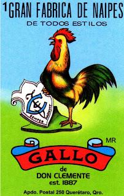

"El gallo canta al amanecer, anunciando el nuevo día."

"The Gallo card in Lotería represents courage and the start of a new day. Known for its early morning crow, the rooster heralds the dawn and the energy that comes with it. This card is one of the most recognizable in the game, symbolizing strength and bravery, traits often associated with the rooster in Mexican culture."
Regresar